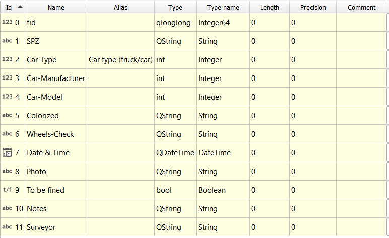
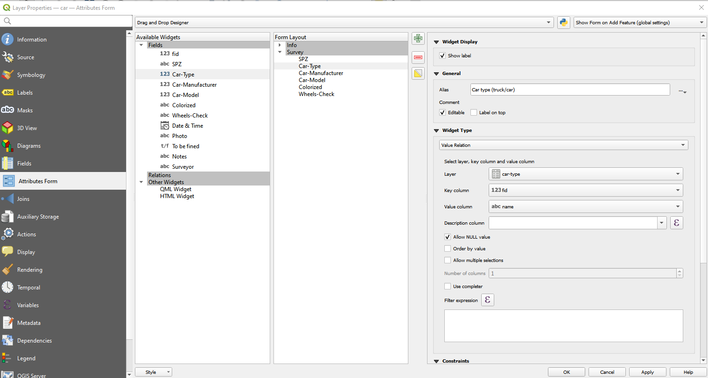
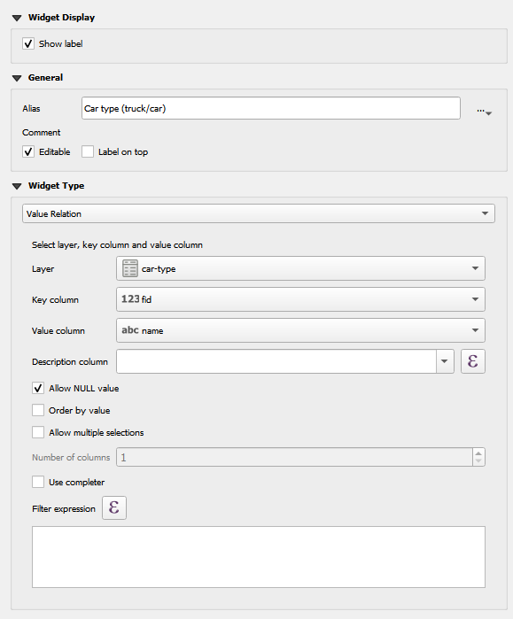
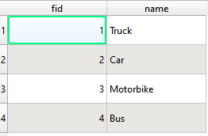
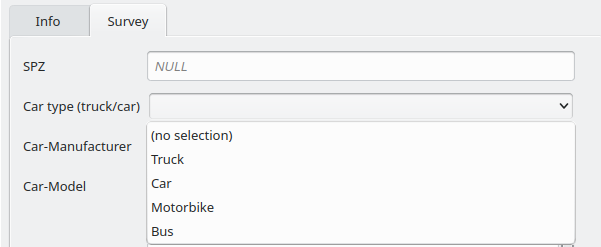
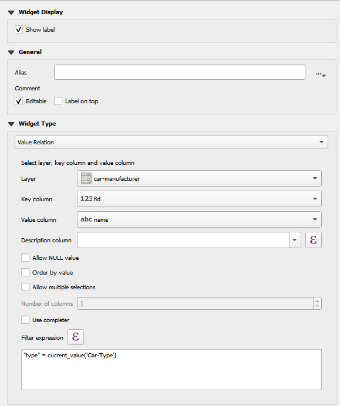
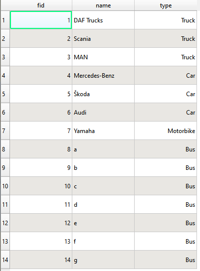
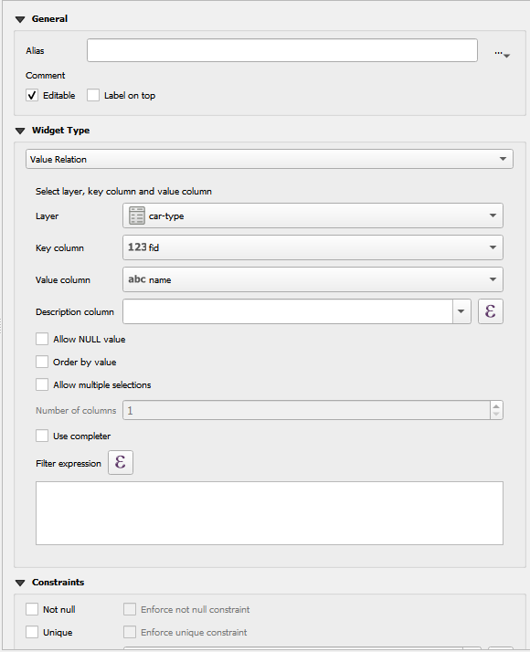
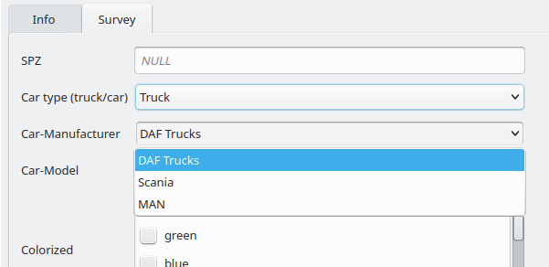
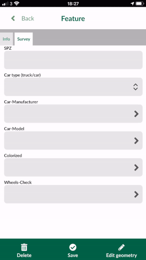

Advanced forms with cascade or drill-down forms
Cascade or drill-down forms are the types of forms that the values listed in one field depend on the value selected in another field.
In this example, we have multiple databases:
- car-model
- car-manufacturer
- car-types
- wheel-check
- color
In the steps below, we will capture points representing car layer: the choices from the value relation will be filtered based on the previous field user picks. For example, if user selects Trucks as Car type (truck/car), the Car-Manufacturer field will present user with DAF Trucks, Scania or MAN. Likewise, the next drop-down menu for Car-Model will change accordingly based on the Car-Manufacturer selection.
QGIS
Below is a dataset named car, which is a point layer, with the following attributes:

The aim is to create an attribute form, where users can populate Car-Type, Car-Manufacturer, & Car-Model with information that is pre-defined.
Each of these fields are stored under a tab called Survey in the Form Layout view.

As well as the spatial data found in car, there are also several non-spatial tables, such as car-type, car-manufacturer & car-model. These are look-up tables that are going to be used to populate the forms as data entry takes place.
Car type
The first field to deal with during data entry is Car-type. A Value Relation widget is used here, referring specifically to the car-type look-up table. The key column is set as the fid (a unique value for each row), and the value column is set to name:

The look-up table is structured as follows:

This means, that when entering data into this field, the user is presented with these four name values:

Note: (no selection) is an option because “Allow NULL value” has been checked in the Widget options.
Car-manufacturer
The next field to populate is Car-manufacturer. The values in this field are dependent on the value selected in Car-type. Again, a Value Relation widget is used, with reference to the car-manufacturer look-up table. The key column is set to fid and the value column is set to name. Because the desired behaviour is for selectable values to be limited by the Car-type, an expression is used:

"type" = current_value('Car-Type') - is used to filter the look-up table (car-manufacturer) by the type field. The expression looks for the users current value in Car-type, takes that value, and uses it to filter the look-up table, leaving only features where the values match.

In order to get this relationship between look-up tables and the spatial data working correctly, a Value Relation widget also needs to be set up on the type field in the car-manufacturer look-up table:

Once, both the widgets for the field in the spatial data and associated look-up table are in place, the data entry process should now be working as a drill-down/cascading form:

Based on a selection of Truck for “Car type (truck/car)”, only three manufacturers are available to select.
Car-model
This field works in an almost identical way to Car-manufacturer and demonstrates that more than one cascade/drill-down can be in place. It uses Value Relation widgets with the look-up table car-model.
Input
To use the cascade form in Input:
- Open Input on your device and from Projects > Explore download documentation\form_cascade
- Open the project
- Select Record and add a point
- The form will appear
- Under Survey tab, for Car-type select Car.
- Manufacturer field should short list Mercedes-Benz, Skoda and Audi. Select Audi
- For Car-Model select A8
